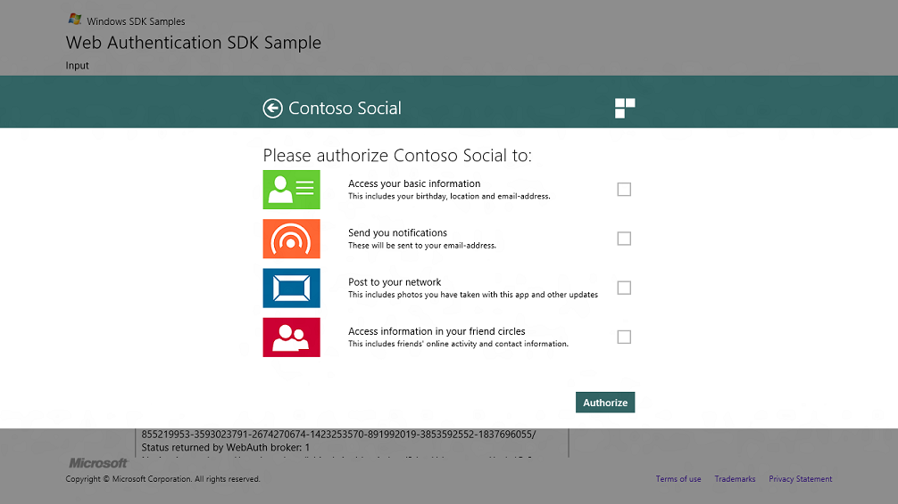

description: Authorization sets what resources you have access to.
ms.assetid: DD6836EE-DF73-4A07-9DF1-0F5A959DDE8F
title: Authorization for web pages
ms.topic: article
ms.date: 05/31/2018
Authorization for web pages
Authorization sets what resources you have access to.
Objective: To allow users access to your app.
Prerequisites
None
Time to complete: 2 minutes.
Instructions
1. Authorization
When the user enters their credentials and clicks the Login button, the permissions page is shown. This page is best at allowing users to control granular permissions in granting the app to access to Contoso’s data. 
2. How to use the sample
You need to know about the following HTML and CSS files.
- The following HTML files correspond to the two pages in the web authorization flow
- WebAuthLogin.html – sample HTML for the login page
- WebAuthPermissions.html – sample HTML for the permissions page
- The CSS files contain Windows 8 styles to help create a Windows Store app web page.
- ui-light.css – this has been derived from the base style sheet for Windows 8 controls.
- ui-webauth.css – this provides incremental styling for optimizing layout for web auth pages.
- theme-colors.css – this provides the incremental styling to override default accent colors of controls with the provider’s brand color.
Summary and next steps
Summary Tutorial for authenticating web pages
Next Best practices for designing authentication web pages
Related topics
Considerations for the web page development
Web Authentication Broker SDK sample app
Windows.Security.Authentication.Web
Â
Â